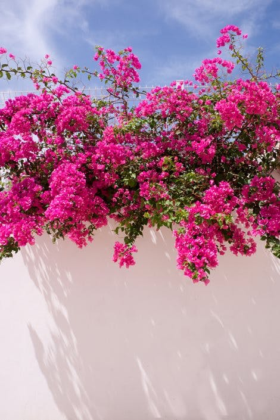

الجهنمية “بوجنفيليا” (Bougainvillea) من الفصيلة الجهنمية. ويوجد من هذا النبات 18 نوعاً منتشرة في أمريكا الجنوبية، وقد أعطي هذا الاسم على أول ملاح فرنسي عبر الأطلنطي لأنه هو الذي اكتشف النبات في القرن الثامن عشر في أمريكا الجنوبية، تنجح زراعته في المملكة العربية السعودية، ويوجد سبعة أنواع تنتشر زراعتها في المملكة من ضمنها هذا النوع، ويستفاد منه في أغراض عدة